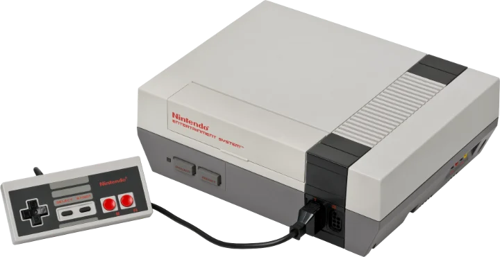
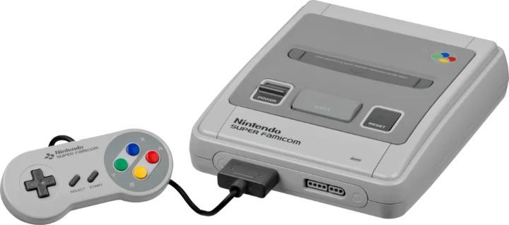
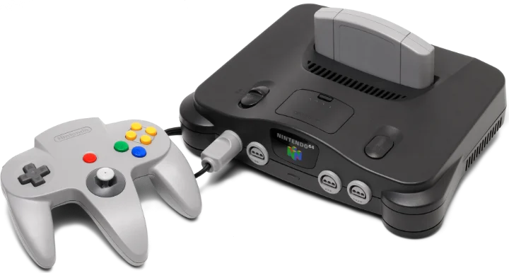
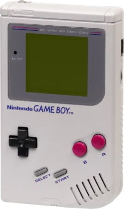
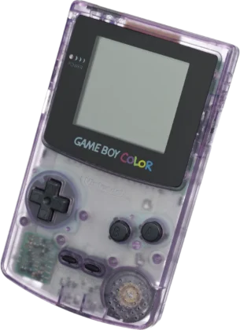
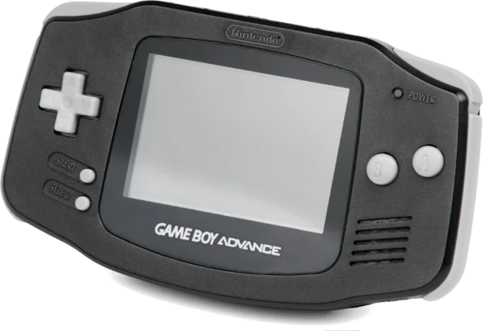
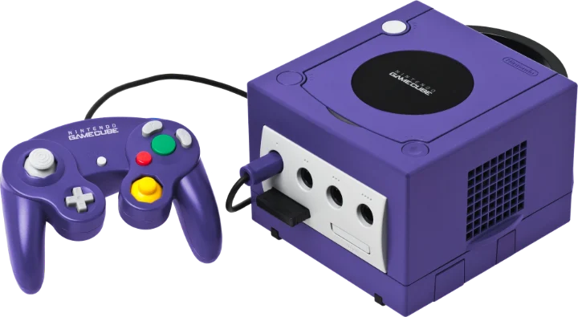

Des cartouches NES aux disques GameCube : choisissez votre console.

Des cartouches japonaises et américaines, souvent traduites depuis le japonais, et toujours en 60 Hz.

Super Nintendo et Super Famicom : traduits en français et remis en 60 Hz.

Les premiers jeux arrivent.


Game Boy et Game Boy Color.

Les premiers jeux arrivent.

Les premiers jeux arrivent.